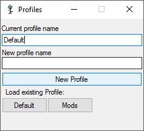
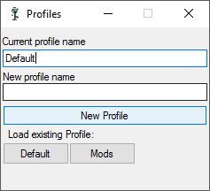

It supports multiple profiles to allow different locations for mods.
Sadly, it is written in C# so is only compatable with Windows.
 


To use, simply run the exectuable.
Downloads:
- v3.0
- v2.0
- v1.0
For more information, or to report a bug please post on the Terraria Forums thread.